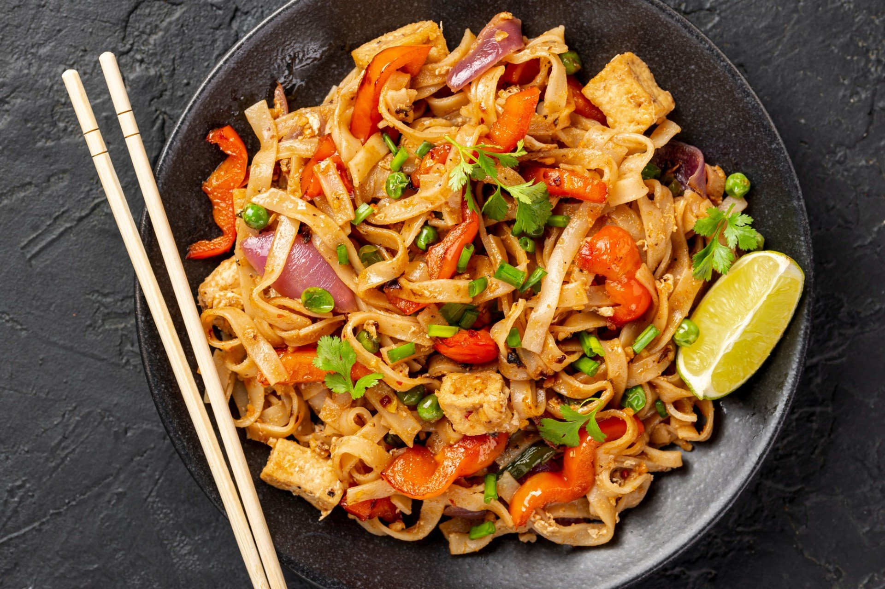

Chicken Pad Thai Recipe
Home

Desctription
Chicken Pad Thai is the ultimate Thai street food classic.
It is a vibrant, stir-fried rice noodle dish that perfectly balances sweet, sour, salty, and savory flavors.
Tossed with tender chicken, scrambled eggs, fresh bean sprouts, and a signature tamarind sauce, it is finished with a crunchy topping of crushed peanuts and lime.
Ingredients
- 150 g flat rice noodles
- 200 g chicken breast (sliced into bite-sized pieces)
- 2 tablespoons of vegetable oil
- 2 cloves of garlic (finely chopped)
- 1 shallot (finely chopped)
- 2 eggs
- 3 tablespoons of Pad Thai sauce (tamarind paste mixed with fish sauce and brown sugar)
- 50 g fresh bean sprouts
- 3 stalks of green onions or chives (cut into 3 cm pieces)
- 3 tablespoons of roasted peanuts (crushed)
- 1 lime (cut into wedges)
- A pinch of chili flakes (optional)
Steps
- Soaking the noodles: Soak the rice noodles in warm water for about 30-40 minutes until they are soft but still firm, then drain them.
- Searing the chicken: Heat the oil in a large pan or wok over high heat, add the garlic and shallot, and fry for 30 seconds until fragrant. Add the chicken and stir-fry until completely cooked through.
- Scrambling the eggs: Push the chicken to one side of the pan. Crack the eggs into the empty space, scramble them quickly with a spatula, and let them cook before mixing them into the chicken.
- Adding noodles and sauce: Toss the soaked noodles into the pan, pour the Pad Thai sauce immediately over the noodles, and stir-fry everything vigorously for 2-3 minutes until the noodles absorb the sauce.
- Adding greens and crunch: Throw in the green onions and bean sprouts, mix well for about 30 seconds, and remove the pan from the heat (the sprouts should stay crunchy).
- Plating and serving: Serve the Pad Thai immediately on a plate, topped generously with crushed peanuts, chili flakes, and a fresh lime wedge on the side.